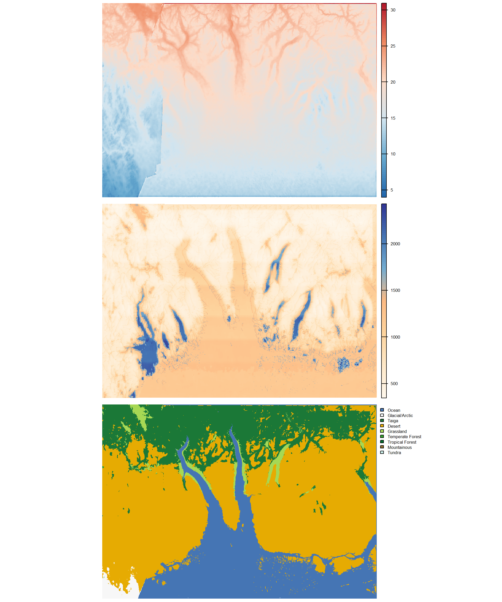
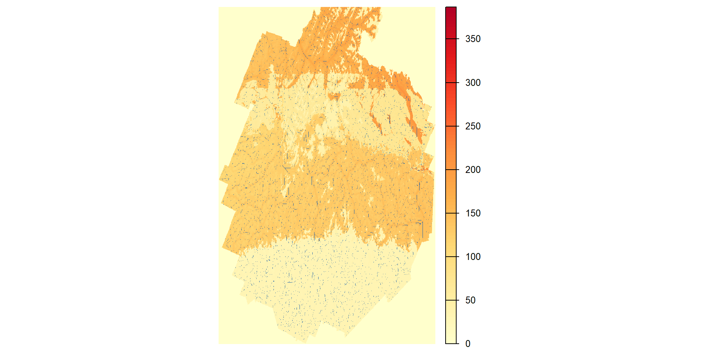

6 The Green Bounty
6.1 Of the Plants and their Ways
Of all the marvels I have encountered in my wanderings, none hath proved more vexing to the understanding — nor more consequential to the daily lives of every soul upon EART-H — than the manner by which plants do grow, flower, and yield up their fruits. For the green things of this world are not as the green things of a simple garden, obedient to the turn of seasons and predictable in their harvest. Nay, they are creatures of the moons, as much as any beast that walketh or any sorcerer who channelleth, and their behaviour is governed by the same ceaseless flux of celestial energy that shapeth all else upon this world.
Here I must set down the thing I was slowest to learn, and which I beg the reader to hold in mind through all that follows. I was raised in Kiliman among people who till, and I grew up supposing, as a child will, that tilling was the thing people were for. The chronicles did nothing to correct me. They are written in the places that have grain, by those who eat it, and they leave a reader with the impression that a country is its fields. It is not so, and I had walked three continents before I understood how badly it is not so. The greater part of what is eaten upon EART-H was never planted by any hand. It springeth up of its own accord where the red light hath lately fallen, and is found, and followed, and gathered. The people who live so are not poor cousins to the farmers; they are the ordinary condition of this world. It is the settled farmer, bound to a field and reading it as a clerk readeth a ledger, who is the curiosity. I shall come to them in their turn, and I shall put them in their proper place, which is a small one.
6.2 Of the Three Natures of Plants, Concerning Which the Learned Do Not Agree
Through long observation, and much conversation with herbalists and naturalists, I have come to understand that the plants of EART-H may be divided broadly into three natures, according to which moon holdeth the greatest sway over their growing. The natures are not rigid, for many plants partake of two or all three; and the learned disagree most vigorously about the particulars. The herbalists of Stockholm insist there are not three natures but seven, whilst a scholar I met in the Fingers maintains that all plant behaviour proceeds from the working of moonlight upon a substance he calleth viridis humour, which he believes floweth through the roots as blood through veins.
I set down the simpler scheme, but I add a caution that every learned account I have read omits, and which anyone who has been hungry knows at once: the three natures are nothing like equal in the belly. Books give the greatest space to the grains, because grains are what books are written about. The stomach ranks them otherwise.
6.2.1 The Ganymede-Touched, or Bloom Plants
The plants that respond chiefly to the green moon Ganymede are the grains and the fruiting trees — the bread and the wine of EART-H, and the least of its larder. Let no one mistake me: the bloom is precious. It is what is eaten at weddings and hoarded against winter, and a people who lose their grain will grieve. But if every bloom field upon this world failed together in a single season, the peoples would tighten their belts and go on. Ganymede, as I have recorded in an earlier chapter, passeth over the same point roughly once in seven days, and the bloom plants store through the dark days and then erupt when the green light falleth. I was told by a naturalist of some repute that in the equatorial regions they grow so fast one can hear them, a faint crackling like parchment crumpled. I paid this man four coins to be taken out at night to hear it. I did hear something, and I am no longer certain it was the wheat.
But here is the crux of the matter, and the source of endless frustration for any who would seek to govern the harvest from afar: the bloom is not triggered by Ganymede alone. Beyond that much I can report nothing with confidence, for no two authorities will tell you the same thing, and each is contemptuous of the others. The farmers call the fortunate conjunctions by a hundred local names — the Quickening, the Green Tide, the Seven-Day Promise, the Breath of Ganymede — and each region hath its own tradition of reading the signs.
The grain farmers of Adirondaq hold that Io’s red light, arriving too soon before the green, doth suppress the bloom: the green moon proposeth, but the red moon disposeth. The herbalists of Stockholm say the flat opposite, that red light ripeneth and the fault lieth in having too little of it; they were angry with me for repeating the Adirondaq saying and would not take wine with me after. And an old woman near the coast of Banff told me the moons have nothing to do with it whatsoever, that a field bloometh when it hath been spoken to kindly and sleepeth when it hath not. She had forty years of good harvests behind her and I had none, and I record her opinion with the rest.
What I can say is only what I have seen: that the same field, under what appeared to my eye to be the same green light, will bring forth in one month and refuse in the next; and that on one slope near Banff the fields yielded three times in a season while those beyond a low ridge yielded once. The farmers there called it moonshade and were satisfied. I was not, but I had nothing better to offer them.
6.2.2 The Io-Touched, or Spreaders
Here is what the peoples of EART-H actually eat. The red moon Io is the moon of transformation, and the plants that answer to it are the most aggressive and opportunistic of all vegetation — the weeds, the pioneers, the colonisers of bare ground after fire or flood or the retreat of ice. They wait for nothing. They seize upon a surge of red light and grow with explosive speed, flinging seed and runner across any ground left open, and within days a hillside that was stone and ash is a thicket a man may lose himself in.
And the greater part of that thicket is food. Not fine food — the spreaders are coarse, and bitter until cooked, and a person raised upon them will tell you frankly that they would rather have bread. But they are everywhere, and they are enormous in quantity, and they come again within the month somewhere else. Nine parts in ten of what is eaten upon this world grew without anyone’s leave.
The spreaders are no gentle providence, mind. They take the bloom fields too if a harvest is left standing a week too long, and the most feared of them is the scarlet bindweed, which I have seen cover a stone wall in a single night with Io at its zenith, its tendrils glowing faintly red. There are stories in every province of settlements abandoned for a season and found overgrown to the rooftops. In the telling I had from a carter on the Tusque road the settlement was never abandoned, and the people were found still within their houses, grown over where they sat; but he was a carter, and it was late, and he had been paid in drink for two other stories already that evening. I have visited three places said to be that settlement and found at each a ruin of no great age with nothing on it but ordinary bramble.
To live upon the spreaders is therefore to move, and to move is the common life of EART-H. The gathering peoples follow the red surges as a mariner follows a wind, and a wise woman of the coastal marshes told me her people read the colour of the undergrowth as a sailor reads the sea, the bright red-green of new Io growth pointing toward food as surely as a needle points north. This is knowledge, and hard-won, but it is not knowledge of a place. It travels in the head of whoever holds it. A gatherer driven out of one country by war or famine is not ruined; she is merely somewhere else, reading a different hillside by the same signs. There is no lord in the world who has found a way to tax that.
6.2.3 The Deos-Touched, or Root Sleepers
The blue moon Deos is the moon of time and memory, and the plants that hearken most to its influence are the strangest and most patient of all. These are the root vegetables, the tubers, the great underground storehouses of energy that grow invisibly beneath the soil for months or even years before they ripen. The root sleepers, as the farmers call them, absorb blue moonlight slowly and steadily, building their reserves in darkness, and they do not reveal themselves until a particular alignment of all three moons triggers their maturation. Some natural philosophers believe that the root sleepers are not truly plants at all, but a form of earth-bound creature that hath learned to mimic plant life; I record this opinion without endorsing it, though I will say that I once saw a freshly dug root sleeper twitch in a manner most disconcerting, and that the labourer beside me did not look at it, and did not look at me, and went on digging. In the northern provinces they will tell you further that the root sleepers move — that a field dug over and found empty will yield in plenty three years after, the roots having come across from somewhere else beneath the ground. The natural philosophers of Tusque say this is nonsense and that the farmers merely dug in the wrong place, which may well be so. But I would observe that the farmers of the north are not in the habit of losing their own fields, and that a thing may be nonsense and true at once, as I have found more than once upon this journey.
Of all the crops of EART-H the root sleepers are the least governable, for the plain reason that nobody can see them. A tax collector may walk the length of a rich field and perceive only bare earth and common grass. There are tales of tubers the size of a grown person’s torso pulled from ground nobody had ever cultivated, and in the highlands of Salmon I was shown a grandmother root that took six labourers two days to lift, and which they swore had been swelling since before their settlement was founded.
But here I must correct an error I carried with me for a long while, and which I think most travellers carry. I had supposed that finding root sleepers was a village secret — that each community held the knowledge of its own ground and no other. It is not so. Finding them is a trade, and it is practised by people who go where they please. The root-finders read slope and water and the age of the ground, the manner of the grass above, the way the frost lies of a morning; and these signs, they insist, hold true from one end of a continent to the other. A finder trained in the Fingers may cross to Adirondaq and be at work within a fortnight. I asked several of them whether the ground of a strange country did not confound them, and got in every case the same faintly insulted answer: that a root is a root, and earth is earth, and only a fool learns one hillside when they might learn the principles.
This is why the root-finders are welcome everywhere and beholden nowhere. Their craft is their own, it walks out of the door with them, and a lord who hangs one has merely lost a finder. I asked an elder among my own people in Kiliman whether the singing that accompanies the work findeth the root or maketh it. I was told the question was foolish, and then given two different answers to it by two people who had each called it foolish.
6.3 Of the Bloom-Farmers, and Why There Are So Few of Them
Now I come to the settled farmers, and I have kept them until last on purpose, for they are the strangest people upon EART-H and everyone mistakes them for the ordinary sort.
A bloom field cannot be read from general principles. It must be learned, one field at a time, over generations, and the learning does not carry. In the province of Centre, which I know better than most, the farming families keep almanacs written in a script devised for the purpose by a council of their forebears, so that a literate stranger sees only meaningless marks; I was shown one and could make nothing of it, though the woman holding it read it as I read these words. Elsewhere the same knowledge is kept in chants learned at the hearth, and I am told some communities divide it deliberately — the book holding the moonlight sequences, the songs holding which field is which — so that neither a stolen ledger nor a captured elder yields the whole.
Consider what this costs them. Such a family cannot leave. Their wealth is not in the grain but in four generations of knowing this particular slope, and that knowledge is worth nothing a valley away. They are the only people on this world who can be found in the same place twice, and they know it, and so does everyone else. Where lords have arisen upon EART-H — and they have arisen, here and there, and I shall speak of them in a later chapter — it is upon the backs of bloom-farmers, because there is nobody else to sit upon.
And yet no such lord has ever grown great, for the plain arithmetic of the thing defeats them. Command every bloom field in a province and you command the bread of that province, which is to say the smallest part of its eating. The gatherers do not care. The root-finders walk away. A tyrant who starves the countryside into obedience finds after a season that the countryside has simply gone, following the red light over the ridge, and left him his fields and his tax rolls and his hungry soldiers. He has captured the one crop that can be counted, and it is not enough to live on.
6.4 Of the Markets, and of Those Who Follow the Harvest
And yet food must be shared, for no farmer’s fields produce all that a family needeth, and the patchwork of ripening meaneth that there is always surplus somewhere and scarcity somewhere else. The markets of EART-H are therefore not the grand, predictable affairs of a world with regular harvests. They are fluid, shifting gatherings that form and dissolve as the pattern of ripening moveth across the landscape. The market-runners — a class of itinerant traders found in every province — make their living by knowing where the blooms are breaking out and carrying the news from valley to valley, so that surplus may find its way to scarcity before the moment passeth. They travel light and fast, and they are welcomed everywhere, for even the most suspicious community knoweth that without the market-runners, abundance in one place and famine in the next would be the common lot of all.
I have followed these runners on their rounds, and they are among the most knowledgeable people upon EART-H. They carry in their heads a map not of places but of times — where the red surge broke last week, where the thickets will be worth stripping next, which of the few bloom valleys is coming ripe and will pay well for salt. I was told of one runner in Tusque who had not slept in a fixed bed for thirty years and could tell you on any given day which three valleys would yield before the week was out.
What no runner can tell you is where anything will be in a year. That is the whole of it. A world may be fed, and fed well, and still offer no man a rent-roll.

| Biome | % of Land | Mean Capacity |
|---|---|---|
| Glacial/Arctic | 13.8 | 5.9 |
| Taiga | 9.2 | 33.9 |
| Desert | 0.0 | 14.6 |
| Grassland | 13.1 | 82.5 |
| Temperate Forest | 27.2 | 138.1 |
| Tropical Forest | 24.7 | 217.6 |
| Mountainous | 11.4 | 49.3 |
| Tundra | 0.5 | 22.7 |
The framework for plant biology in this chapter draws heavily on James C. Scott’s The Art of Not Being Governed (Scott 2009) and his earlier Seeing Like a State (Scott 1998). Scott argues that the legibility of agriculture — the ability of a state to see, measure, and tax agricultural production — is a prerequisite for state formation. Rice paddy cultivation in Southeast Asia exemplified this: it was sedentary, predictable, storable, and divisible, making it ideal as a tax base. Scott contrasts this with “escape crops” — root vegetables like cassava and yams, swidden cultivation, and foraging — which are difficult for states to monitor and tax.
The moon-driven agriculture of EART-H is designed to make most crops behave more like Scott’s escape crops. Even grain — the paradigmatic state crop — becomes unpredictable and illegible when its growth cycle depends on complex lunar conjunctions that vary from field to field. The farmer’s almanac is the EART-H equivalent of the local knowledge that Scott identifies as the enemy of state simplification: it is particular, contextual, and non-transferable. In thinking through how this would work, however, it became obvious that very specific local knowledge would bind a bloom farmer closely to a specific plot of land so I was forced to minimize their role in supplying food – pushing that burden to the other forms of vegetation.
The three plant natures (Ganymede-touched bloom plants, Io-touched spreaders, Deos-touched root sleepers) roughly correspond to Scott’s taxonomy of state crops, escape crops, and hidden crops. The innovation here is that even the “state crop” equivalent (grain) has been rendered less legible by the lunar system, so that the distinction between governable and ungovernable agriculture is a matter of degree rather than kind. This was intentional on my part because I didn’t want to create a world without farmers or where food was scarce; I just wanted to make them difficult to govern and to give every advantage to an imaginary that resisted hierarchical control.
As it is, I am not sure my model breaks sufficiently with the model we have in reality. My chapter relies heavily on notions of governance and states that I still want to hold as speculative–as I wrote I honestly don’t know how or if hierarchy fill form around land ownership.
The market-runners serve the function that Scott attributes to highland trade networks in Southeast Asia: they enable exchange without requiring the fixed infrastructure (granaries, warehouses, tax offices) that states depend upon. The wandering gatherers are the EART-H equivalent of Scott’s “barbarians” — peoples who remain outside state control not by accident but by adaptation to an environment that rewards mobility over settlement.
The political economy I am reasonably confident about. The biology I am not, and I would welcome pointers there in particular. A starting bibliography for now includes:
- “Mast Seeding in Perennial Plants: Why, How, Where?”, Dave Kelly and Victoria Sork (Kelly and Sork 2002) — the closest real analogue to the bloom plants: oaks and beeches synchronise enormous seed crops at irregular multi-year intervals across whole regions, and no one can predict a mast year.
- “Why Bamboos Wait So Long to Flower”, Daniel Janzen (Janzen 1976) — bamboo flowers once in forty to a hundred and twenty years, synchronously across a continent, and then dies; the resulting famines are documented.
- The Mushroom at the End of the World, Anna Tsing (Tsing 2015) — an economics built on a crop that cannot be farmed, only found, and the mobile pickers who read landscape for it.
- Plant Behaviour and Intelligence, Anthony Trewavas (Trewavas 2014) — the serious end of plant signalling and response, for plants that appear to know when to ripen.
- Braiding Sweetgrass, Robin Wall Kimmerer (Kimmerer 2013) — Indigenous plant knowledge held in people and practice rather than in records.
- After Man: A Zoology of the Future, Dougal Dixon (Dixon 1981) — the founding text of speculative biology as a form.
- What Does a Martian Look Like?, Jack Cohen and Ian Stewart (Cohen and Stewart 2002) — on building a biosphere that is not merely Earth with extra limbs.
- Semiosis, Sue Burke (Burke 2018) — a colony novel in which the plants are the dominant intelligence and agriculture becomes negotiation.